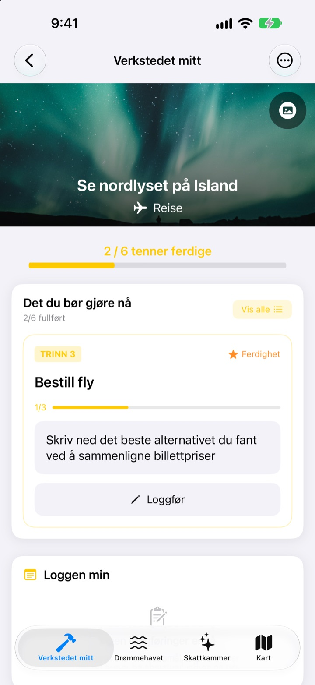
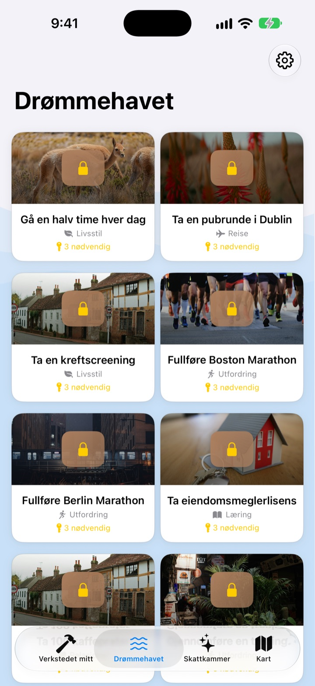
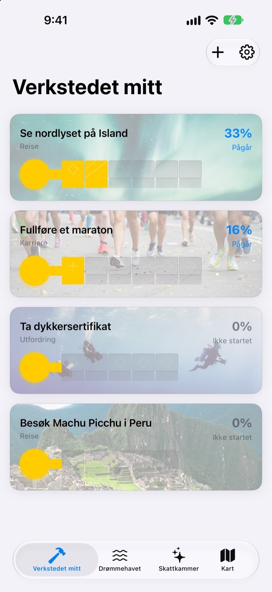
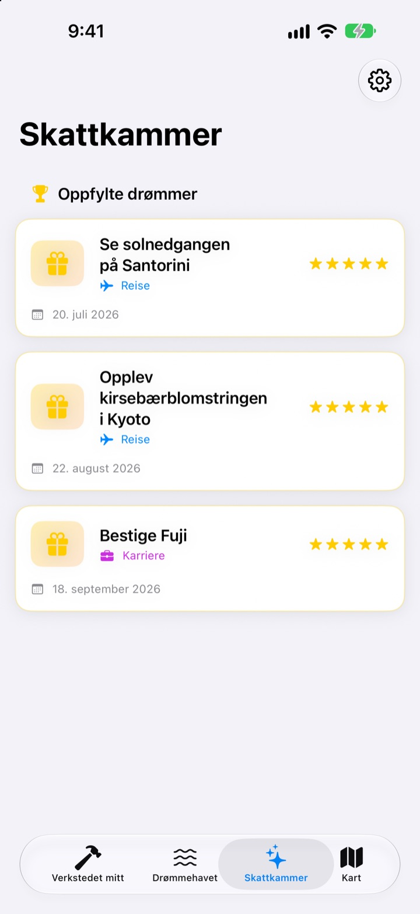

Ikke bare skriv
ned bucketlisten
Velg en drøm, så blir de små stegene som leder dit, tennene i en nøkkel. Svar på dagens steg, ett spørsmål om gangen, og før du vet ordet av det, er esken åpen.
Kjøp én gang, og alle funksjonene er dine. Ingen abonnement, ingen reklame.

Gjør nøkkelen ferdig
Drømmen om nordlyset på Island mangler to steg. Svar på hvert spørsmål med én linje (eller la det stå tomt), og trykk på Neste. Hvert ferdige steg fyller en tann, og en full nøkkel åpner esken.
Har du skrevet en bucketliste og glemt den?
«Se nordlyset» er så stort at du ikke vet hvor du skal begynne, så det blir stående på listen i årevis. Dream Seeker deler drømmen opp i steg du kan ta i dag, som å sjekke sesongen, spare penger og bestille fly, og viser bare det ene som gjelder nå.
Velg blant over 590 drømmer
Reiser, opplevelser, prestasjoner, helse, læring og relasjoner. Drømmer fra seks områder flyter i esker på Drømmehavet. Ta med en til verkstedet ditt, så er stegene allerede delt opp.
Finner du ikke din? Lag den selv med tittel, område og stegene som trengs.

Én tann om gangen, akkurat nok for i dag
I Verkstedet mitt ser du med en gang hvor langt nøkkelen til hver drøm har kommet. Steget som gjelder nå, står øverst, og når du svarer på spørsmålene, fylles en tann.
Svar og bilder samles i Loggen min, og i framdriftstidslinjen kan du se tilbake på hele veien.

Oppfylte drømmer i skattkammeret, steder på kartet
Fyll alle tennene og åpne esken. Oppfylte drømmer samles med dato i skattkammeret, og drømmer på pause venter der til du vil fortsette.
Drømmer med et sted vises på kartet, så du ser alle stedene du vil dra til.

Kom i gang på tre steg
- 1
Velg en drøm
Trykk på en eske på Drømmehavet og velg Ta med til verkstedet.
- 2
Svar på dagens steg
Svar på spørsmålene i det øverste steget ett for ett for å fylle en tann.
- 3
Åpne esken
Når alle tennene er fylt, er nøkkelen ferdig og esken åpner seg.
Seks områder på Drømmehavet
- Reise
- Se nordlyset på Island · Se solnedgangen på Santorini
- Opplevelse
- Prøv fallskjermhopping · Prøv paragliding
- Prestasjon
- Fullføre et maraton · Vandre til Everest Base Camp
- Helse
- Ta 20 pull-ups · Få synlige magemuskler
- Læring
- Snakke engelsk flytende · Snakke fransk flytende
- Relasjoner
- Reis jorda rundt med foreldrene · Bo en måned på Jeju med venner
Hvert område har nesten hundre drømmer. Lag dine egne med Legg til ny drøm i Verkstedet mitt.
Kjøp én gang, få alt
Appen
- Over 590 drømmer med spørsmål til hvert steg
- Dine egne drømmer
- Loggen min med bilder og framdriftstidslinjen
- Skattkammer og kart
- Drømmeklatringsmodus
- Fremtidige oppdateringer
Støtt utvikleren (frivillig)
- Hvis appen hjelper deg, kan du gi et lite tips i Innstillinger
- Tips låser ikke opp noe. Uten tips har du fortsatt alle funksjonene
Engangsbeløp, ikke abonnement.
Ingenting i appen koster ekstra. Ingen konto, ingen reklame.
Vanlige spørsmål
Hvordan kommer jeg i gang?
Trykk på en eske du liker i fanen Drømmehavet, og velg Ta med til verkstedet. Svar på spørsmålene i det nåværende steget i Verkstedet mitt, så fylles tennene én etter én. Når alle er fylt, kan du åpne esken.
Kan jeg legge til min egen drøm?
Ja. Trykk på Legg til ny drøm i Verkstedet mitt, og skriv inn tittel, område og stegene dit.
Hvordan setter jeg en drøm på pause eller tar den opp igjen?
Velg Gi opp denne drømmen i menyen til en pågående drøm, så flyttes den til Drøm på pause i skattkammeret. Trykk på Start på nytt der for å hente den tilbake til verkstedet, eller Slett for godt for å fjerne den.
Hva er drømmeklatringsmodus?
En skjerm der du styrer drømmene som en fjelltur. Slå den av eller på under Innstillinger > Visning. Du kan følge frister for hvert steg og hindringer som penger og tid, som i et prosjekt.
Bildene vises ikke.
Noen bakgrunnsbilder lastes ned fra internett. Sjekk at du er på nett. Uten tilkobling vises et standardbilde.
Kan jeg flytte loggen til en ny iPhone?
Loggen lagres bare på denne enheten, uten konto eller synkronisering. Gjenoppretter du en ny iPhone fra en iCloud- eller datamaskinsikkerhetskopi, blir den med sammen med de andre appdataene.
Kan man kjøpe noe i appen?
Nei. Med appen er alle funksjonene dine. Tipsene i Innstillinger er bare der hvis du vil si takk.
Blir drømmene og loggen min sendt noe sted?
Nei. Det finnes ingen konto, ingen reklame og ingen analyseverktøy. Drømmene, loggen og bildene dine blir på enheten.
Hvordan kontakter jeg dere?
Feil, ideer eller hva som helst: send det via Send tilbakemelding i appens innstillinger, eller som DM på Instagram (@lee25_ios).
Spørsmål eller problemer? Skriv til leeo@kakao.com.